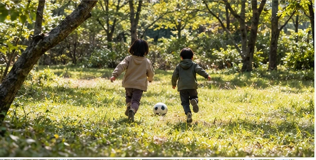

SOTOJITAKU CAMP / BEGINNER GUIDE
家族のキャンプは、
余白まで準備する。
予定を詰め込まず、設営・食事・寝る時間に余裕をつくるところから。
ファミリーキャンプでは、道具の人数適合だけでなく、設営中に子どもをどう見守るか、食事を複雑にしすぎないか、眠る環境を整えられるかが満足度に直結します。「大人2人ならできること」をそのまま詰め込まず、家族全体のペースに合わせることが大切です。
01 人数に合う道具を選ぶ
テントは定員、テーブルは食事する人数、クーラーは滞在時間と食材量を確認します。人数が増えるほど荷物も増えるため、大きさだけでなく収納サイズや車への積載も一緒に考えます。
商品名の「○人用」だけでなく、メーカー仕様と実際の使い方を確認します。寝具や荷物を置くと体感スペースは小さくなることがあります。
02 設営中の役割を決める
到着直後は荷下ろしや設営で大人の手が必要になります。子どもが安全に待てる場所、見守る人、先に出すチェアや飲み物などを決めておくと慌てにくくなります。火を使う道具は、子どもの動線から離して扱います。
焚き火やバーナーは、道具だけでなく周囲の配置と見守りまで含めて準備します。
03 “イベント”を増やしすぎない
BBQ、焚き火、星空、外遊び、朝ごはんを全部成功させようとすると、大人がずっと作業することがあります。初回は「外で食べる」「焚き火を見る」など主役を一つ決め、何もしない時間を予定に残す方が家族で楽しみやすくなります。
寝る時間から逆算し、夕食と片付けを早めにすると夜の余裕が生まれます。
出発前のチェック
- 人数に合うテント・寝具
- 子どもの着替えを多めに
- 夜の移動用ライト
- 食べ慣れた予備の食べ物
- 保冷と衛生用品
- 設営中の見守り役
- 火の周囲の安全スペース
- 翌朝を詰め込みすぎない
最初は近場でも十分長距離移動と初キャンプを同時にすると負担が増えます。設備やルールが確認しやすいキャンプ場を選び、無理なら途中で予定を軽くできる計画が安心です。
次に読む
MAKE YOUR CAMP
条件を選ぶと、必要なものが変わります。
7つの質問から、持ち物・買う/借りる・ごはん・予算・1日の流れまで、あなたのキャンプとして組み立てます。
SOTOJITAKU CAMPでつくる →